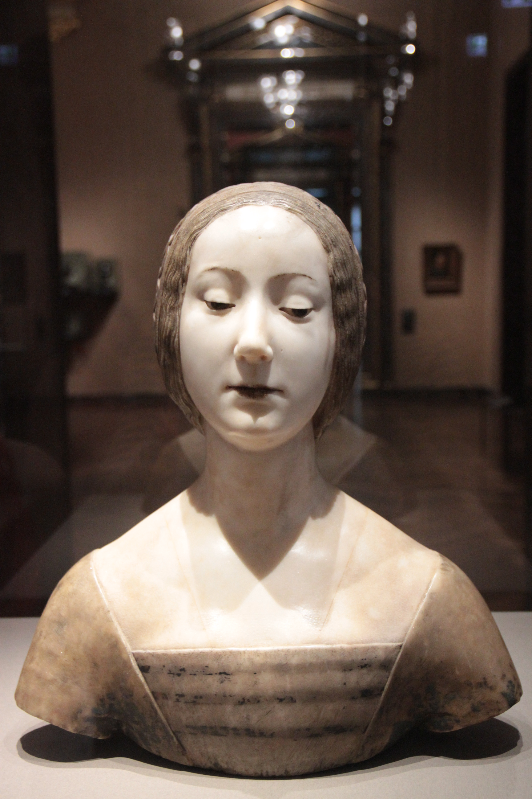

<<!DOCTYPE html>
<html lang="en">
  <head>
    <meta charset="UTF-8" />
    <title>Ренесанс</title>
    <link rel="stylesheet" href="style.css" />
    <link rel="icon" href="images/icon.png" />
    <link href="https://use.fontawesome.com/releases/v5.0.13/css/all.css" rel="stylesheet">
  </head>
  <body>
    <div id="container">
      <header>
        
        <section id="head">
          
          <h1>Ренесанс</h1>
          <h3>
          Відомі скульптори епохи Відродження
          </h3>
        </section>
      </header>
      <nav>
        <ul>
          <li><a href="index.html">Головна</a></li>
          <li><a href="3.html">Скульптури</a></li>
          <li><a href="4.html">Відеотека</a></li>

        </ul>
      </nav>
      <aside>
       <h4>Інші скульптори Ренесансу</h4>
        <hr />
        <ul>
          <li><a href="1.html">Мікеланджело</a></li>
          <li><a href="2.html">Донателло</a></li>
          <li><a href="5.html">Нанні ді Банко</a></li>
          <li><a href="6.html">Ян Бяли</a></li>
          <li><a href="7.html">Андреа дель Верроккйо</a></li>
          <li><a href="8.html">Лоренцо Гіберті</a></li>
          <li><a href="9.html">Франческо Лаурана</a></li>
          <br />
          <h4>Інші скульптори Ренесансу</h4>
          <hr />
        </ul>
      </aside>

      <main>
        <h2>Скульптури та портрети скульпторів</h2>
        
        <div id="images">
          <figure>
            
            <figcaption>Мікеланджело</figcaption>
          </figure>
          <figure>
            
            <figcaption>Донателло</figcaption>
          </figure>
          <figure>
            
            <figcaption>«Оплакування Христа»</figcaption>
          </figure>
          <figure>
            
            <figcaption>«Давид»</figcaption>
          </figure>
          <figure>
            
            <figcaption>Нанні ді Банко</figcaption>
          </figure>
          <figure>
            
            <figcaption>Вівтар роботи Яна Бялого</figcaption>
          </figure>
          <figure>
            
            <figcaption>«Скульптура чотирьох Святих»</figcaption>
          </figure>
          <figure>
            
            <figcaption>Андреа дель Верроккйо</figcaption>
          </figure>
          <figure>
            
            <figcaption>Лоренцо Гіберті</figcaption>
          </figure>
          <figure>
            
            <figcaption>«Христос і святий Тома»</figcaption>
          </figure>
          <figure>
            
            <figcaption>«Жертвопринесення Ісаака»</figcaption>
          </figure>
          <figure>
            
            <figcaption>«Жіно́че погру́ддя»</figcaption>
          </figure>
        </div>
      </main>

      <footer> &copy; Кривий ріг - 2021 р.
      </footer>
    </div>
    <a href="#top">
      
    </a>
  </body>
</html>
